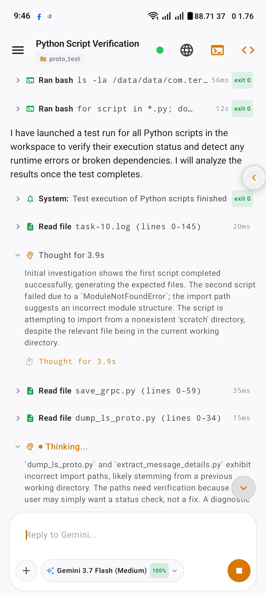
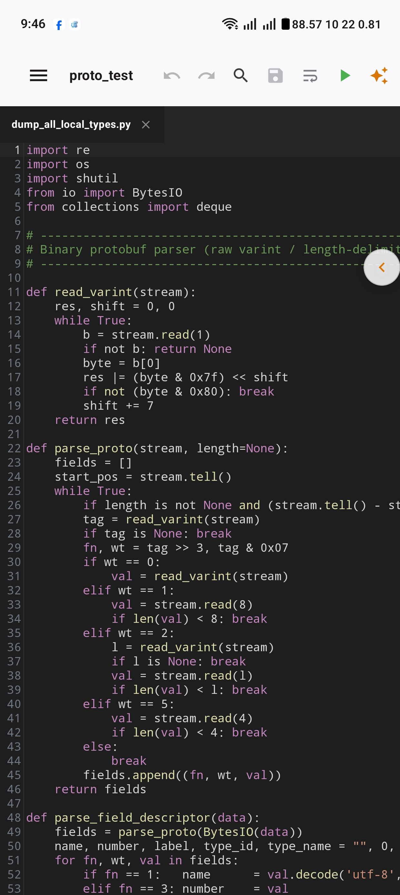
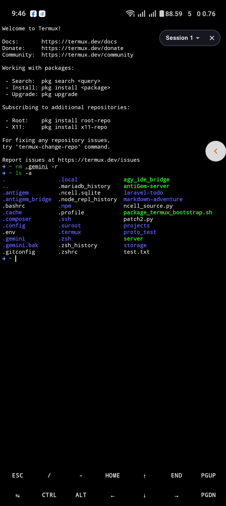
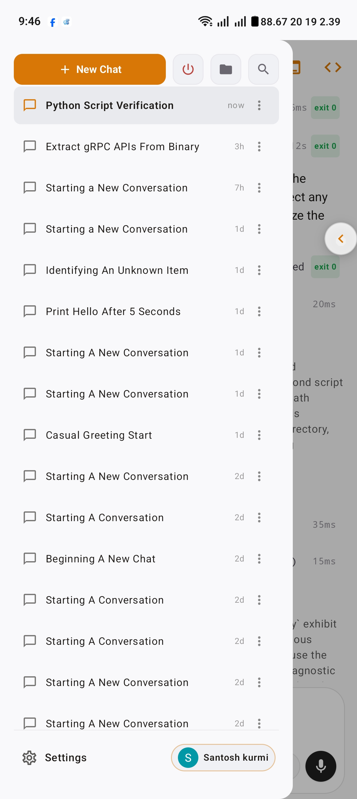
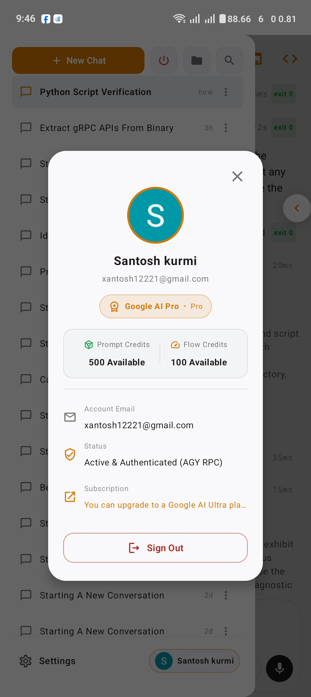
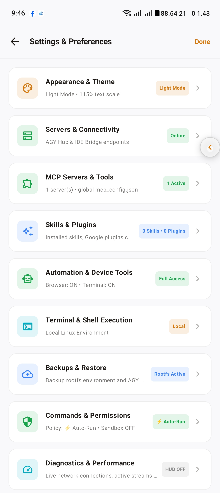
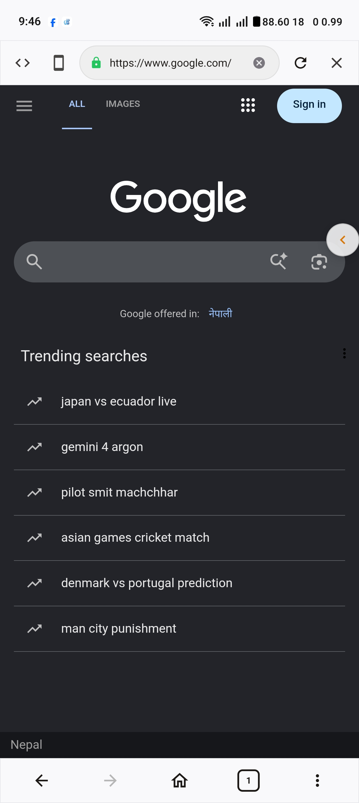

AntiGem turns your Android phone into a full-scale AI development station. Powered by Jetpack Compose, an embedded Go IDE bridge, native Termux Linux subsystem, and direct binary gRPC hub mode to Antigravity (agy).


Unlike ordinary AI wrappers that run CLI tools via stdout parsing, AntiGem communicates natively with the agy binary over gRPC hub mode using Square Wire.
Strictly speaks the protobuf schema of agy directly over Square Wire for maximum reliability.
Supports live question-and-answer prompts, tool confirmations, and multi-step subagent execution.
Runs a native Linux PTY terminal with foreground services for seamless background tasks.
Download the standalone all-in-one edition or connect to your existing Termux setup.
All-in-one standalone environment. You do NOT need the Termux app installed. AntiGem natively runs its own full Linux environment, package manager (pkg/apt), shell, and compilers in its private sandbox.
Connects to an external Termux application already installed on your device. Runs agy_ide_bridge inside external Termux and connects the AntiGem UI over localhost.
Click on any screenshot to view the high-resolution interface.





A complete workstation engineered to bridge desktop-grade coding to mobile.
Clone and compile AntiGem directly with your favorite toolchain.
agy_ide_bridge